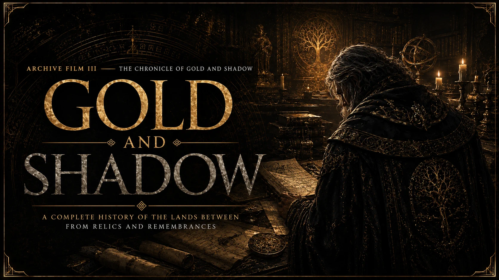
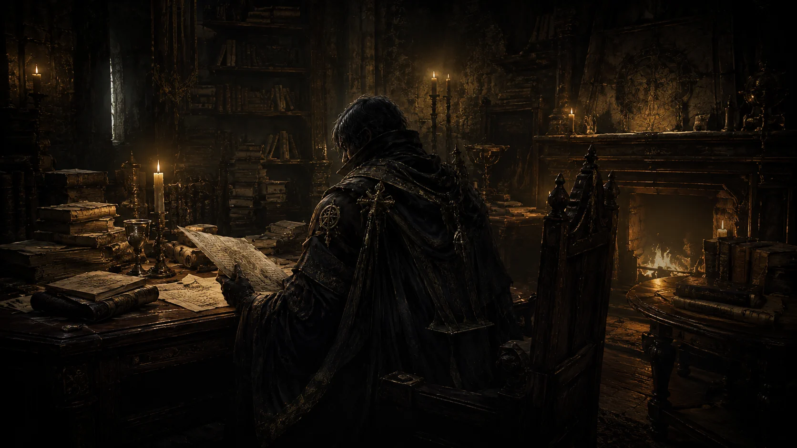

Film III · In productionA history that knows
where truth ends.
“The land does not narrate itself.”
After the Erdtree burns, an unnamed chronicler inherits Gideon Ofnir’s library—and the impossible task of reconstructing an age from objects made by the people who survived it.

they say, and no more.
A flat statement is evidence. A witness is not a fact. “Perhaps” means perhaps. And when the record is silent, the shape of that silence matters.
The complete chronicle
Seventeen parts move from the world before gold through the shattering, the shadowed land, the burning, and six mutually exclusive dawns.
Cataloguing the surviving relics…
No verdict.
The fragments remain yours.
“I have found no ruin in these pages caused by a question honestly held open.”
Read The Six Dawns →Follow the evidence into the world.
The Archive keeps the full chronicle beside the quests, places, bosses, and tools that shaped it.
Gold and Shadow, KINDLING, and The Testament of Ranni—three histories, one persistent reader.
Enter the Tales → JourneyTrace every surviving threadQuestlines, bosses, endings, trophies, and the complete road from Limgrave into Shadow.
Open the Tarnished Path → BuildBecome the last witnessForge the Tarnished who crossed every battlefield named in the chronicle.
Enter the Full Build Lab →